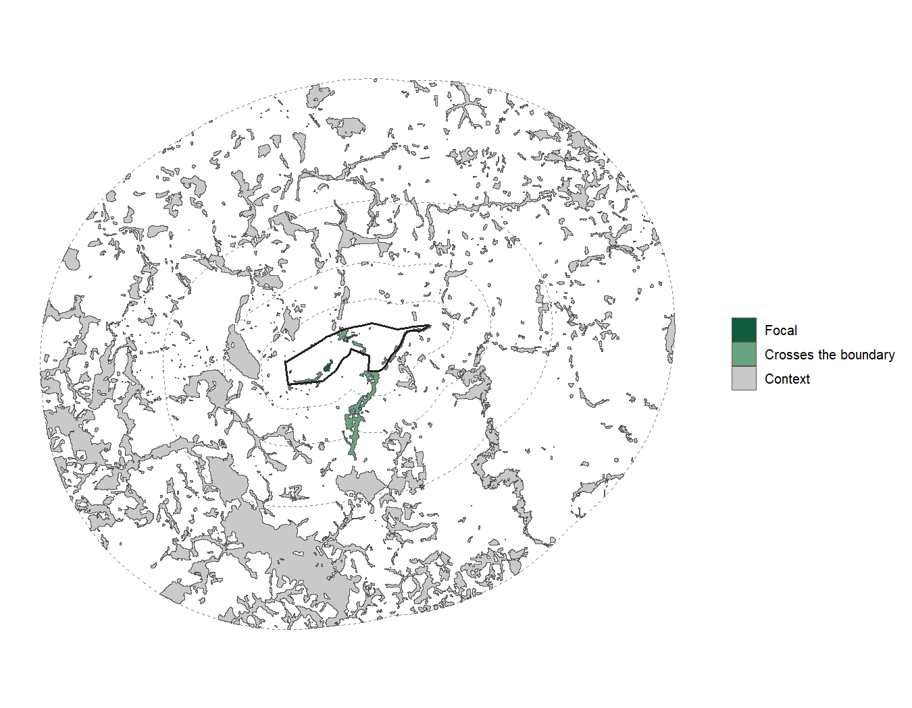
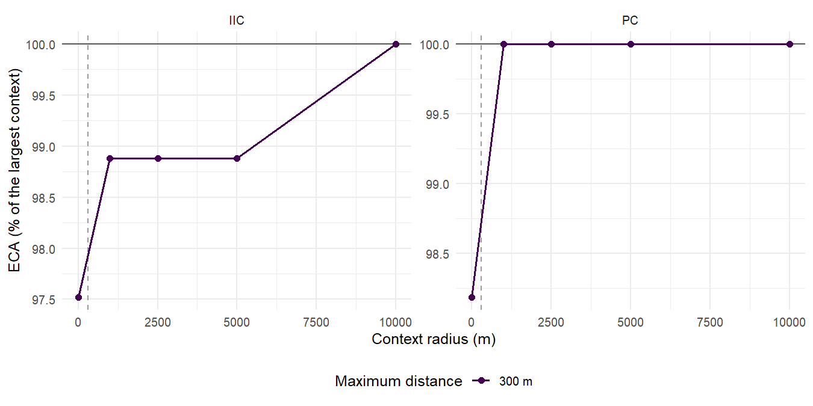
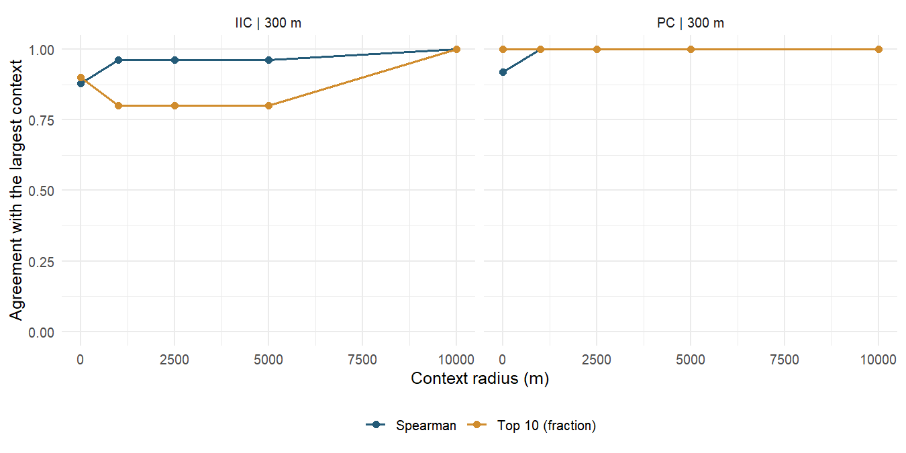
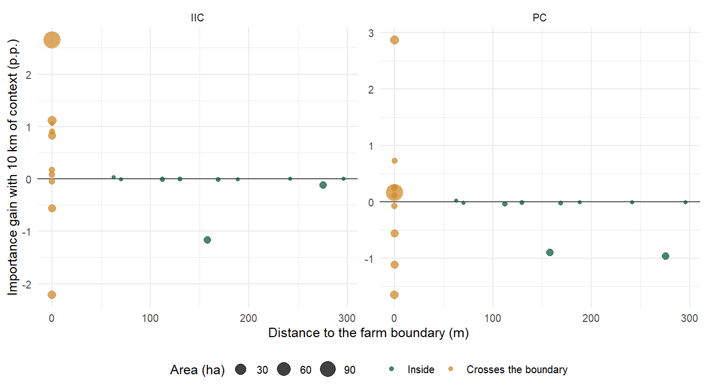
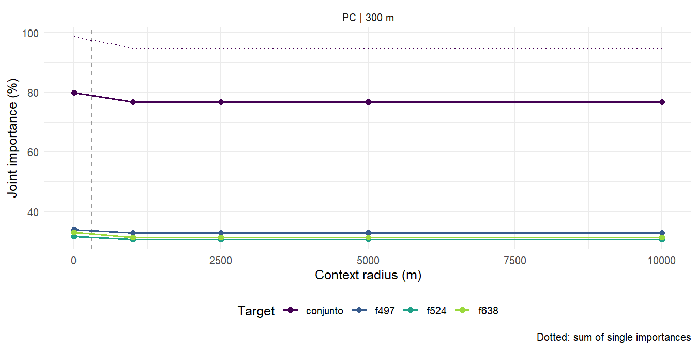

13 Edge effects and an extended context
The farm boundary cuts fragments and hides the stepping stones outside it. The connectivity measured only inside the study area can therefore be underestimated near the edge, and the order of priority fragments can depend on the clip. This chapter measures that effect at Lagoa do Sino, with up to 10 km of surroundings as context.
Focal area and context
With a focal area, land_connectivity() measures the connectivity of the study
area’s habitat using its surroundings as stepping stones: each fragment counts
with its area inside the focal area, those outside count only as links, and the
denominator is still the study area. Indices computed with contexts of different
sizes are therefore comparable.
connectivity_context() repeats the analysis for several radii. From the maps and
the habitat classes, it extends the area by the largest radius, reloads the maps
through the same acquisition route (here, HTTP reading), reclassifies and
vectorizes once, and reuses the distances of the largest context for the smaller
ones. Radius 0 is the analysis without context, the same as in chapter
10:
maps_2024 <- load_rasters(ufscar, start = 2024, end = 2024, method = "http",
product = "mapbiomas_brasil_c10")
context <- connectivity_context(maps_2024, classes = 3, max_dist = 300,
context = c(0, 1000, 2500, 5000, 10000), metric_patch = c("IIC", "PC"),
d_ref = 150, parallel = 4, language = "en")
Figure 13.1: Lagoa do Sino farm (black outline) and the context radii (dashed). Green: forest fragments of the farm; grey: those of the surroundings.
Sensitivity of the indices
Indices only grow with the radius, because more stepping stones can only shorten
paths. When the curve levels off (converged), the context no longer changes the
result; if it still grows at the largest radius, the edge effect persists.

Figure 13.2: ECA of each radius relative to that of the largest context. The dashed line marks the maximum distance of 300 m.
| Radius (m) | Index | Fragments | ECA (ha) | ProtConn | Change (%) |
|---|---|---|---|---|---|
| 0 | IIC | 26 | 25.55 | 3.92 | -2.48 |
| 1000 | IIC | 73 | 25.91 | 3.97 | -1.12 |
| 2500 | IIC | 166 | 25.91 | 3.97 | -1.12 |
| 5000 | IIC | 345 | 25.91 | 3.97 | -1.12 |
| 10000 | IIC | 904 | 26.20 | 4.02 | 0.00 |
| 0 | PC | 26 | 27.80 | 4.26 | -1.82 |
| 1000 | PC | 73 | 28.31 | 4.34 | 0.00 |
| 2500 | PC | 166 | 28.31 | 4.34 | 0.00 |
| 5000 | PC | 345 | 28.31 | 4.34 | 0.00 |
| 10000 | PC | 904 | 28.31 | 4.34 | 0.00 |
At Lagoa do Sino, the 10 km surroundings add 878 fragments to the farm’s 26, but the PC ECA rises only 1.8% and levels off from 1.0 km: the large inner fragment dominates the index. IIC, which does not decay with distance, still changes between the largest radii. In small or narrow areas, or with scattered forest, the effect is usually larger.
Stability of the ranking
rank_stability compares, radius by radius, the order of the farm’s fragments
with that of the largest context: Spearman correlation and overlap of the top 10.

Figure 13.3: Agreement of the ranking of the farm’s fragments with that of the largest context.
Edge effect by fragment
The fragments that cross the farm boundary change most with the context: without it they come in clipped, and the context restores their whole shape and their outside neighbours. Some gain importance and others lose it, because importance is relative to the index, which also grows. Inner fragments barely change:

Figure 13.4: Importance gain of each farm fragment between the analysis without context and the 10 km one, against its distance to the boundary.
Stepping stones outside the farm
stepping_stones lists the fragments of the surroundings that sustain the farm’s
connectivity. They have zero area in the focal analysis, so their importance is
only that of a connector. With forest at 300 m, only IIC finds outside stepping
stones: by number of steps, a chain of outside fragments links the farm to the
large neighbouring fragment. In PC, probability decays with distance, and the gain
comes from counting whole the fragments that cross the boundary, not from stepping
stones:
| Index | Fragment | Area (ha) | Connector (%) |
|---|---|---|---|
| IIC | 203 | 113.41 | 2.23 |
| IIC | 254 | 1.07 | 2.23 |
| IIC | 272 | 2.79 | 2.23 |
| IIC | 284 | 2.30 | 2.23 |
| IIC | 323 | 6.98 | 2.23 |
| IIC | 341 | 50.53 | 2.23 |
| IIC | 349 | 7.48 | 2.23 |
| IIC | 374 | 22.51 | 2.23 |
| IIC | 577 | 2408.97 | 2.23 |
| IIC | 760 | 150.95 | 2.23 |
Target fragments
With targets, the analysis measures the importance of a fragment or of a set of
fragments removed at once, radius by radius. The difference from the sum of single
importances (interaction) shows whether the fragments substitute for each other
(positive) or share the same contribution (negative). Targets can be
fragment_id, named lists of ids or sf geometries, including outside the study
area:
ps <- context$patch_sensitivity
top <- head(ps$fragment_id[ps$metric == "PC" & ps$radius_m == 10000 & ps$rank <= 3], 3)
targets <- connectivity_context(maps_2024, classes = 3, max_dist = 300,
context = c(0, 1000, 2500, 5000, 10000), metric_patch = "PC", d_ref = 150,
targets = c(list(set = top), setNames(as.list(top), paste0("f", top))),
language = "en")
targets$target_sensitivity
targets$target_plotAt Lagoa do Sino, the three most important fragments share contributions: their joint importance is below the sum of the single ones (negative interaction), because the pairs between them are counted twice in the sum.

Figure 13.5: Joint importance of the farm’s three most important fragments and of each of them; dotted, the sum of single importances.
A single context
Without the sensitivity curve, read the maps with context_m (chapter
4): the polygons inherit the focal area and land_connectivity()
uses it on its own. The analysis works with any acquisition route: MapBiomas by
tiles or over HTTP, ESA WorldCover (load_lulc()) and local folders
(load_local_rasters()), from any country.
The figures and tables of this chapter were generated once, with this same flow,
by development/gerar_figuras_contexto.R (about 3 min with internet), and are kept
in imagens/; the book only displays them.